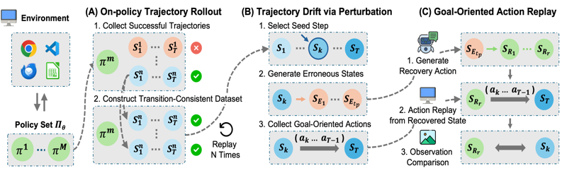
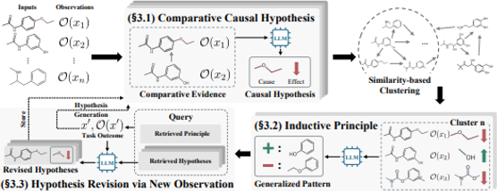

Publications

arxiv Preprint, 2026
Lost in Recovery: Demystifying Recovery Behavior of Computer-Use Agents
Byeonghun Bang*,
Sangwoo Park*
, Jinheon Baek
arxiv Preprint, 2026.
PDF
Code

arxiv Preprint, 2026
Principia: Test-Time Hypotheses to Principle Construction
Dongki Kim*,
Sangwoo Park*
arxiv Preprint, 2026.
PDF